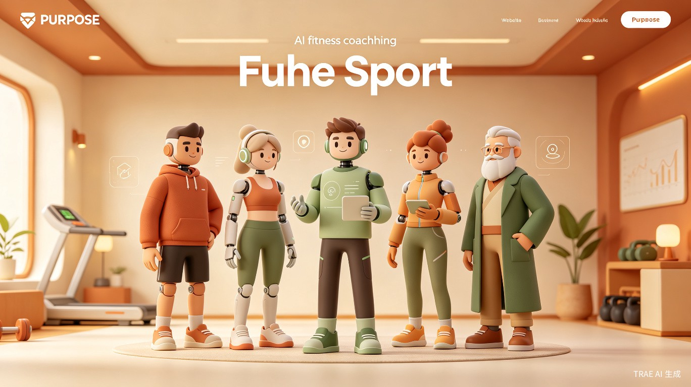
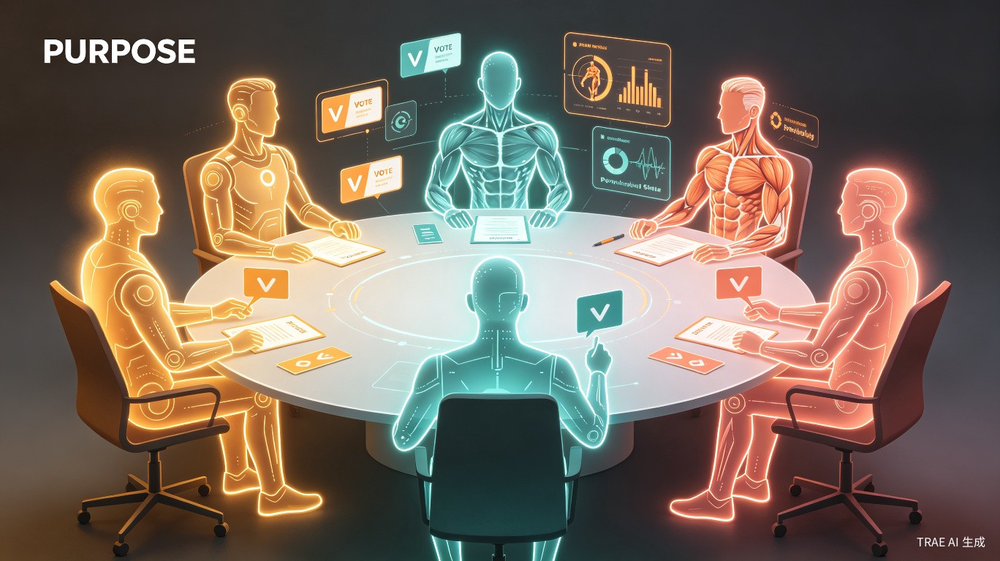
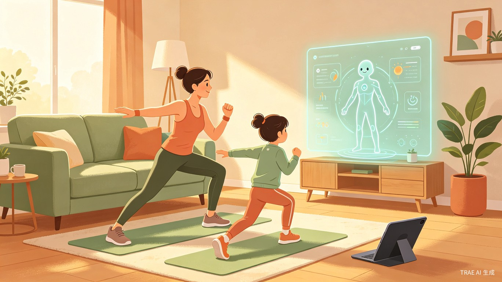

五个会因为你偷懒而生气的AI教练
身心一体运动训练系统 | 五位独立人格教练，听你的身体说话

让教练看看你的身体在说什么
同一个用户说同一句话，五个教练给出完全不同的判断。找到你喜欢的那一个，建立真正的信任。
对话示例
用户说："今天天气真好"
42岁 · 前财务总监
沉默式尊重35岁 · 前乐队鼓手
节拍式推动58岁 · 前武馆账房
对账式关怀31岁 · 前康复科医师
沉默式温柔67岁 · 前钟表匠
精确式等待不是换皮客服，是真正能"看见"你的AI教练
基于103条肌肉数据实时生成训练方案，每次都不一样，没有预设动作库。你的身体今天什么状态，动作就长什么样。
AI审批官审查每个动作的安全性——膝盖有伤？自动排除深蹲，推荐替代动作。不让任何一个动作伤害你。
每个动作同时生成简单版（生活语言）和专业版（解剖术语），按需切换。想听"收紧屁股"还是"激活臀大肌"，你说了算。
心理危机等级是训练强度的一等参数——你难过时，教练不会让你做100个波比跳。情绪也是身体的一部分。
当问题超出单个教练的判断范围时，五位教练各自独立思考后投票表决

用户输入
状态 + 需求
6个幕僚并行
多维度分析
教练整合
形成方案
检察官审查
安全把关
圆桌投票
多视角博弈
对话输出
人格化回应
💡 这不是概念演示，是真实可用的功能。五位教练的投票结果会直接影响你的训练方案。
不是"发现了市场空白然后去做"的项目，是"心疼了一群人，然后一步步走到今天"
打下运动科学基础
看到行业真实面貌
同样的对话重复三百次："孩子体态有问题""没事，长大就好了"
体态问题像穷病会遗传——家长不重视，孩子长大也不重视。不是不想治，是治不起，也没人陪。
从"治病"转向"陪伴"
第一个版本上线
用户需要的不是说明书，是一个真的在看他的人
一个不够，变五个
让体态矫正从"有钱人的奢侈品"变成"普通人的日用品"

家长自己练好了，孩子自然跟着好。这不是治标，是治本。
私教300-500元/节 → 傅和普惠定价
在家、在办公室、出差路上——15分钟就够了
核心不是便宜，是让每个用户都觉得自己被看见了